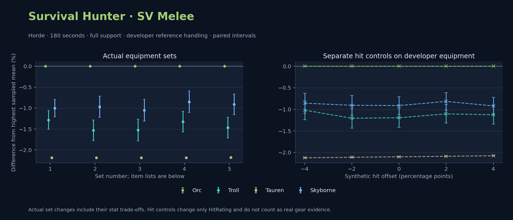

Horde · Orc / Troll / Tauren / Skyborne

Pets / guardians: Raptor, Hawk 1, Hawk 2 · 233.0 DPS (29.6% of total). Reference: Orc, developer equipment, 180 seconds and full support. Pet choices remain those of the developer build.
WoWSims developer · P1 Dual Wield
Unimplemented enchant or active set effects: [{"id": 441, "pieces": 3, "effects": ["Minor increase to running and swimming speed. Does not stack with similar effects."]}]
180 seconds, full support and original developer references. Hit below is generic sheet melee / spell hit; school and talent bonuses can be attached directly to spells.
| Race | DPS | Gap and interval | Generic hit | Replay |
|---|---|---|---|---|
| Orc | 786.43 | +0.000% ± 0.000 | 15.0% / 13.0% | Native input · Website JSON |
| Skyborne | 778.56 | -1.000% ± 0.206 | 15.0% / 13.0% | Native input · Website JSON |
| Troll | 776.34 | -1.282% ± 0.225 | 15.0% / 13.0% | Native input · Website JSON |
| Tauren | 769.23 | -2.187% ± 0.010 | 15.0% / 13.0% | Native input · Website JSON |
| Slot | Item | ID | Enchant |
|---|---|---|---|
| Head | Lieutenant Commander's Chain Helmet | 16428 | Falcon's Call |
| Neck | Fury of the Forgotten Swarm | 21809 | |
| Shoulder | Spaulders of the Unseen | 13116 | |
| Back | Earthweave Cloak | 21187 | Enchant Cloak - Agility |
| Chest | Primal Batskin Jerkin | 19685 | Enchant Chest - Greater Stats |
| Wrist | Primal Batskin Bracers | 19687 | Enchant Bracer - Agility |
| Hands | Primal Batskin Gloves | 19686 | Enchant Gloves - Greater Agility |
| Waist | Belt of Preserved Heads | 20216 | |
| Legs | Leggings of the Plague Hunter | 22690 | Falcon's Call |
| Feet | Mongoose Boots | 18506 | Enchant Boots - Agility |
| Ring 1 | Cutthroat's Signet | 272408 | |
| Ring 2 | Band of Earthen Might | 21182 | |
| Trinket 1 | Adaptive Combat Assistant | 272437 | |
| Trinket 2 | Cleansed Vilebranch Icon | 270276 | |
| Main hand | Assassination Blade | 13036 | Enchant 2H Weapon - Lesser Impact |
| Off hand | Heartseeker | 12783 | Enchant 2H Weapon - Lesser Impact |
| Ranged / relic | Fahrad's Reloading Repeater | 22347 | SAF-T Ultra Precision Scope |
Published gear / developer ammo-quiver control · Published equipment with developer ranged inputs
Recorded source replacements: [{"slot": "shoulder", "from": 18720, "to": 16689, "publishedAlternativeRank": 1, "publishedEpDelta": -9.6, "reason": "First published alternative compatible with the current WoWSims database, class, faction and occupied slots."}, {"slot": "back", "from": 13340, "to": 18511, "publishedAlternativeRank": 1, "publishedEpDelta": -17.6, "reason": "First published alternative compatible with the current WoWSims database, class, faction and occupied slots."}, {"slot": "feet", "from": 13402, "to": 275618, "publishedAlternativeRank": 2, "publishedEpDelta": -9.1, "reason": "First published alternative compatible with the current WoWSims database, class, faction and occupied slots."}, {"slot": "ranged", "from": 2100, "to": 13023, "publishedAlternativeRank": 1, "publishedEpDelta": -7.5, "reason": "First published alternative compatible with the current WoWSims database, class, faction and occupied slots."}]
Unimplemented enchant or active set effects: [{"id": 143, "pieces": 2, "effects": ["Improves your chance to hit by 2.0%."]}]
Unmeasured proc rates: [{"source": "enchant", "id": 1900, "name": "Enchant Weapon - Crusader", "kind": "ppm", "origin": "vanilla"}, {"source": "enchant", "id": 1900, "name": "Enchant Weapon - Crusader", "kind": "ppm", "origin": "vanilla"}]
180 seconds, full support and original developer references. Hit below is generic sheet melee / spell hit; school and talent bonuses can be attached directly to spells.
| Race | DPS | Gap and interval | Generic hit | Replay |
|---|---|---|---|---|
| Orc | 763.83 | +0.000% ± 0.000 | 6.0% / 6.0% | Native input · Website JSON |
| Skyborne | 756.45 | -0.966% ± 0.252 | 6.0% / 6.0% | Native input · Website JSON |
| Troll | 752.11 | -1.534% ± 0.246 | 6.0% / 6.0% | Native input · Website JSON |
| Tauren | 747.13 | -2.186% ± 0.011 | 6.0% / 6.0% | Native input · Website JSON |
| Slot | Item | ID | Enchant |
|---|---|---|---|
| Head | Black Dragonscale Helm | 252605 | Lesser Arcane Amalgamation |
| Neck | Horizon Choker | 13085 | Enchant Necklace - Agility |
| Shoulder | Magister's Mantle | 16689 | |
| Back | Shifting Cloak | 18511 | Enchant Cloak - Agility |
| Chest | Dawn Armor | 252483 | Enchant Chest - Major Intellect |
| Wrist | Magiskull Cuffs | 13107 | Enchant Bracer - Superior Intellect |
| Hands | Devilsaur Gauntlets | 15063 | Enchant Gloves - Greater Agility |
| Waist | Ranger's Belt | 272397 | |
| Legs | Devilsaur Leggings | 15062 | Lesser Arcane Amalgamation |
| Feet | Scalegut Treaders | 275618 | Enchant Boots - Greater Agility |
| Ring 1 | Channeler's Ring | 272406 | |
| Ring 2 | Cutthroat's Signet | 272408 | |
| Trinket 1 | Adaptive Combat Assistant | 272437 | |
| Trinket 2 | Shard of the Splithooves | 10659 | |
| Main hand | Bagh Nakh | 250618 | Enchant Weapon - Crusader |
| Off hand | Scarlet Kris | 5267 | Enchant Weapon - Crusader |
| Ranged / relic | Eaglehorn Long Bow | 13023 | SAF-T Ultra Precision Scope |
Published ranked alternatives · Published pre-raid
Source ammunition and quiver settings: {"ammo": "ThoriumHeadedArrow", "quiverBonus": "QuickdrawQuiver"}
The native enums list arrows and quivers. Thorium Shells, the first source-listed alternative to Rockshard Pellets, use the native 17.5-DPS arrow control. The crafted-container scenario uses the native 13% control for the source pouch. These effect translations retain the source bullet/pouch identity; website option names differ. The ranged-input diagnostics show that these settings affect this melee preset. Paired controls.
Recorded source replacements: [{"slot": "shoulder", "from": 18720, "to": 16689, "publishedAlternativeRank": 1, "publishedEpDelta": -9.6, "reason": "First published alternative compatible with the current WoWSims database, class, faction and occupied slots."}, {"slot": "back", "from": 13340, "to": 18511, "publishedAlternativeRank": 1, "publishedEpDelta": -17.6, "reason": "First published alternative compatible with the current WoWSims database, class, faction and occupied slots."}, {"slot": "feet", "from": 13402, "to": 275618, "publishedAlternativeRank": 2, "publishedEpDelta": -9.1, "reason": "First published alternative compatible with the current WoWSims database, class, faction and occupied slots."}, {"slot": "ranged", "from": 2100, "to": 13023, "publishedAlternativeRank": 1, "publishedEpDelta": -7.5, "reason": "First published alternative compatible with the current WoWSims database, class, faction and occupied slots."}]
Unimplemented enchant or active set effects: [{"id": 143, "pieces": 2, "effects": ["Improves your chance to hit by 2.0%."]}]
Unmeasured proc rates: [{"source": "enchant", "id": 1900, "name": "Enchant Weapon - Crusader", "kind": "ppm", "origin": "vanilla"}, {"source": "enchant", "id": 1900, "name": "Enchant Weapon - Crusader", "kind": "ppm", "origin": "vanilla"}]
180 seconds, full support and original developer references. Hit below is generic sheet melee / spell hit; school and talent bonuses can be attached directly to spells.
| Race | DPS | Gap and interval | Generic hit | Replay |
|---|---|---|---|---|
| Orc | 763.08 | +0.000% ± 0.000 | 6.0% / 6.0% | Native input · Website JSON |
| Skyborne | 755.06 | -1.052% ± 0.258 | 6.0% / 6.0% | Native input · Website JSON |
| Troll | 751.43 | -1.527% ± 0.259 | 6.0% / 6.0% | Native input · Website JSON |
| Tauren | 746.42 | -2.183% ± 0.011 | 6.0% / 6.0% | Native input · Website JSON |
| Slot | Item | ID | Enchant |
|---|---|---|---|
| Head | Black Dragonscale Helm | 252605 | Lesser Arcane Amalgamation |
| Neck | Horizon Choker | 13085 | Enchant Necklace - Agility |
| Shoulder | Magister's Mantle | 16689 | |
| Back | Shifting Cloak | 18511 | Enchant Cloak - Agility |
| Chest | Dawn Armor | 252483 | Enchant Chest - Major Intellect |
| Wrist | Magiskull Cuffs | 13107 | Enchant Bracer - Superior Intellect |
| Hands | Devilsaur Gauntlets | 15063 | Enchant Gloves - Greater Agility |
| Waist | Ranger's Belt | 272397 | |
| Legs | Devilsaur Leggings | 15062 | Lesser Arcane Amalgamation |
| Feet | Scalegut Treaders | 275618 | Enchant Boots - Greater Agility |
| Ring 1 | Channeler's Ring | 272406 | |
| Ring 2 | Cutthroat's Signet | 272408 | |
| Trinket 1 | Adaptive Combat Assistant | 272437 | |
| Trinket 2 | Shard of the Splithooves | 10659 | |
| Main hand | Bagh Nakh | 250618 | Enchant Weapon - Crusader |
| Off hand | Scarlet Kris | 5267 | Enchant Weapon - Crusader |
| Ranged / relic | Eaglehorn Long Bow | 13023 | SAF-T Ultra Precision Scope |
Published gear / developer ammo-quiver control · Published equipment with developer ranged inputs
One source-listed alternative; at least 80% of the source slot score retained. Reported hit selects the contrast; only native stats determine simulation outcomes. This is an experimental combination, not an endorsed best set.
Recorded source replacements: [{"slot": "shoulder", "from": 18720, "to": 16689, "publishedAlternativeRank": 1, "publishedEpDelta": -9.6, "reason": "First published alternative compatible with the current WoWSims database, class, faction and occupied slots."}, {"slot": "back", "from": 13340, "to": 18511, "publishedAlternativeRank": 1, "publishedEpDelta": -17.6, "reason": "First published alternative compatible with the current WoWSims database, class, faction and occupied slots."}, {"slot": "feet", "from": 13402, "to": 275618, "publishedAlternativeRank": 2, "publishedEpDelta": -9.1, "reason": "First published alternative compatible with the current WoWSims database, class, faction and occupied slots."}, {"slot": "ranged", "from": 2100, "to": 13023, "publishedAlternativeRank": 1, "publishedEpDelta": -7.5, "reason": "First published alternative compatible with the current WoWSims database, class, faction and occupied slots."}]
Unimplemented enchant or active set effects: [{"id": 143, "pieces": 2, "effects": ["Improves your chance to hit by 2.0%."]}]
Unmeasured proc rates: [{"source": "enchant", "id": 1900, "name": "Enchant Weapon - Crusader", "kind": "ppm", "origin": "vanilla"}, {"source": "enchant", "id": 1900, "name": "Enchant Weapon - Crusader", "kind": "ppm", "origin": "vanilla"}]
180 seconds, full support and original developer references. Hit below is generic sheet melee / spell hit; school and talent bonuses can be attached directly to spells.
| Race | DPS | Gap and interval | Generic hit | Replay |
|---|---|---|---|---|
| Orc | 770.98 | +0.000% ± 0.000 | 7.0% / 7.0% | Native input · Website JSON |
| Skyborne | 764.42 | -0.850% ± 0.255 | 7.0% / 7.0% | Native input · Website JSON |
| Troll | 760.76 | -1.325% ± 0.246 | 7.0% / 7.0% | Native input · Website JSON |
| Tauren | 754.15 | -2.182% ± 0.011 | 7.0% / 7.0% | Native input · Website JSON |
| Slot | Item | ID | Enchant |
|---|---|---|---|
| Head | Black Dragonscale Helm | 252605 | Lesser Arcane Amalgamation |
| Neck | Horizon Choker | 13085 | Enchant Necklace - Agility |
| Shoulder | Magister's Mantle | 16689 | |
| Back | Howler's Furs | 272414 | Enchant Cloak - Agility |
| Chest | Dawn Armor | 252483 | Enchant Chest - Major Intellect |
| Wrist | Magiskull Cuffs | 13107 | Enchant Bracer - Superior Intellect |
| Hands | Devilsaur Gauntlets | 15063 | Enchant Gloves - Greater Agility |
| Waist | Ranger's Belt | 272397 | |
| Legs | Devilsaur Leggings | 15062 | Lesser Arcane Amalgamation |
| Feet | Scalegut Treaders | 275618 | Enchant Boots - Greater Agility |
| Ring 1 | Channeler's Ring | 272406 | |
| Ring 2 | Cutthroat's Signet | 272408 | |
| Trinket 1 | Adaptive Combat Assistant | 272437 | |
| Trinket 2 | Shard of the Splithooves | 10659 | |
| Main hand | Bagh Nakh | 250618 | Enchant Weapon - Crusader |
| Off hand | Scarlet Kris | 5267 | Enchant Weapon - Crusader |
| Ranged / relic | Eaglehorn Long Bow | 13023 | SAF-T Ultra Precision Scope |
Published one-slot hit alternative · Published pre-raid
Source ammunition and quiver settings: {"ammo": "ThoriumHeadedArrow", "quiverBonus": "QuickdrawQuiver"}
The native enums list arrows and quivers. Thorium Shells, the first source-listed alternative to Rockshard Pellets, use the native 17.5-DPS arrow control. The crafted-container scenario uses the native 13% control for the source pouch. These effect translations retain the source bullet/pouch identity; website option names differ. The ranged-input diagnostics show that these settings affect this melee preset. Paired controls.
One source-listed alternative; at least 80% of the source slot score retained. Reported hit selects the contrast; only native stats determine simulation outcomes. This is an experimental combination, not an endorsed best set.
Recorded source replacements: [{"slot": "shoulder", "from": 18720, "to": 16689, "publishedAlternativeRank": 1, "publishedEpDelta": -9.6, "reason": "First published alternative compatible with the current WoWSims database, class, faction and occupied slots."}, {"slot": "back", "from": 13340, "to": 18511, "publishedAlternativeRank": 1, "publishedEpDelta": -17.6, "reason": "First published alternative compatible with the current WoWSims database, class, faction and occupied slots."}, {"slot": "feet", "from": 13402, "to": 275618, "publishedAlternativeRank": 2, "publishedEpDelta": -9.1, "reason": "First published alternative compatible with the current WoWSims database, class, faction and occupied slots."}, {"slot": "ranged", "from": 2100, "to": 13023, "publishedAlternativeRank": 1, "publishedEpDelta": -7.5, "reason": "First published alternative compatible with the current WoWSims database, class, faction and occupied slots."}]
Unimplemented enchant or active set effects: [{"id": 143, "pieces": 2, "effects": ["Improves your chance to hit by 2.0%."]}]
Unmeasured proc rates: [{"source": "enchant", "id": 1900, "name": "Enchant Weapon - Crusader", "kind": "ppm", "origin": "vanilla"}, {"source": "enchant", "id": 1900, "name": "Enchant Weapon - Crusader", "kind": "ppm", "origin": "vanilla"}]
180 seconds, full support and original developer references. Hit below is generic sheet melee / spell hit; school and talent bonuses can be attached directly to spells.
| Race | DPS | Gap and interval | Generic hit | Replay |
|---|---|---|---|---|
| Orc | 770.11 | +0.000% ± 0.000 | 7.0% / 7.0% | Native input · Website JSON |
| Skyborne | 763.10 | -0.910% ± 0.243 | 7.0% / 7.0% | Native input · Website JSON |
| Troll | 758.83 | -1.465% ± 0.248 | 7.0% / 7.0% | Native input · Website JSON |
| Tauren | 753.34 | -2.177% ± 0.011 | 7.0% / 7.0% | Native input · Website JSON |
| Slot | Item | ID | Enchant |
|---|---|---|---|
| Head | Black Dragonscale Helm | 252605 | Lesser Arcane Amalgamation |
| Neck | Horizon Choker | 13085 | Enchant Necklace - Agility |
| Shoulder | Magister's Mantle | 16689 | |
| Back | Howler's Furs | 272414 | Enchant Cloak - Agility |
| Chest | Dawn Armor | 252483 | Enchant Chest - Major Intellect |
| Wrist | Magiskull Cuffs | 13107 | Enchant Bracer - Superior Intellect |
| Hands | Devilsaur Gauntlets | 15063 | Enchant Gloves - Greater Agility |
| Waist | Ranger's Belt | 272397 | |
| Legs | Devilsaur Leggings | 15062 | Lesser Arcane Amalgamation |
| Feet | Scalegut Treaders | 275618 | Enchant Boots - Greater Agility |
| Ring 1 | Channeler's Ring | 272406 | |
| Ring 2 | Cutthroat's Signet | 272408 | |
| Trinket 1 | Adaptive Combat Assistant | 272437 | |
| Trinket 2 | Shard of the Splithooves | 10659 | |
| Main hand | Bagh Nakh | 250618 | Enchant Weapon - Crusader |
| Off hand | Scarlet Kris | 5267 | Enchant Weapon - Crusader |
| Ranged / relic | Eaglehorn Long Bow | 13023 | SAF-T Ultra Precision Scope |
The same declared pool is available to every race. Each race keeps its best validation-sample set with its screening-selected racial policy. Separate samples confirm that choice, with fresh precision samples near the practical-loss boundary. Gaps use the highest sampled mean under that same duration, support and reference treatment as their reference. A zero reference gap does not certify a race; the main matrix also allows uncertainty in the leader.
| Pool | Seconds | Support | References | Race | DPS | Gap and interval | Racial policies / mana | Selected set | Generic hit: melee / spell | Replay |
|---|---|---|---|---|---|---|---|---|---|---|
| published-pre-raid | 60 | full | developer | Orc | 814.00 | +0.000% ± 0.00020,000 iterations | developer / developer / developerMana waits 0.0s | published-hunter-survival-melee-horde-f4fa91d301005d33-higher-hit-source-ammo | 7.0% / 7.0% | Input · Result · Stats |
| published-pre-raid | 60 | full | developer | Troll | 808.17 | -0.716% ± 0.09020,000 iterations | developer / developer / developerMana waits 0.0s | published-hunter-survival-melee-horde-f4fa91d301005d33-higher-hit-source-ammo | 7.0% / 7.0% | Input · Result · Stats |
| published-pre-raid | 60 | full | developer | Skyborne | 802.09 | -1.464% ± 0.08520,000 iterations | developer / developer / developerMana waits 0.0s | published-hunter-survival-melee-horde-f4fa91d301005d33-higher-hit-source-ammo | 7.0% / 7.0% | Input · Result · Stats |
| published-pre-raid | 60 | full | developer | Tauren | 792.85 | -2.599% ± 0.00420,000 iterations | developer / developer / developerMana waits 0.0s | published-hunter-survival-melee-horde-f4fa91d301005d33-higher-hit-source-ammo | 7.0% / 7.0% | Input · Result · Stats |
| published-pre-raid | 60 | full | explicit | Orc | 814.00 | +0.000% ± 0.00020,000 iterations | developer / developer / developerMana waits 0.0s | published-hunter-survival-melee-horde-f4fa91d301005d33-higher-hit-source-ammo | 7.0% / 7.0% | Input · Result · Stats |
| published-pre-raid | 60 | full | explicit | Troll | 808.17 | -0.716% ± 0.09020,000 iterations | developer / developer / developerMana waits 0.0s | published-hunter-survival-melee-horde-f4fa91d301005d33-higher-hit-source-ammo | 7.0% / 7.0% | Input · Result · Stats |
| published-pre-raid | 60 | full | explicit | Skyborne | 802.09 | -1.464% ± 0.08520,000 iterations | developer / developer / developerMana waits 0.0s | published-hunter-survival-melee-horde-f4fa91d301005d33-higher-hit-source-ammo | 7.0% / 7.0% | Input · Result · Stats |
| published-pre-raid | 60 | full | explicit | Tauren | 792.85 | -2.599% ± 0.00420,000 iterations | developer / developer / developerMana waits 0.0s | published-hunter-survival-melee-horde-f4fa91d301005d33-higher-hit-source-ammo | 7.0% / 7.0% | Input · Result · Stats |
| published-pre-raid | 60 | self | developer | Orc | 420.89 | +0.000% ± 0.0005,000 iterations | developer / developer / developerMana waits 0.0s | published-hunter-survival-melee-horde-f4fa91d301005d33-higher-hit-source-ammo | 7.0% / 7.0% | Input · Result · Stats |
| published-pre-raid | 60 | self | developer | Troll | 416.58 | -1.024% ± 0.1435,000 iterations | developer / developer / developerMana waits 0.0s | published-hunter-survival-melee-horde-f4fa91d301005d33-higher-hit-source-ammo | 7.0% / 7.0% | Input · Result · Stats |
| published-pre-raid | 60 | self | developer | Skyborne | 414.00 | -1.639% ± 0.1385,000 iterations | developer / developer / developerMana waits 0.0s | published-hunter-survival-melee-horde-f4fa91d301005d33-higher-hit-source-ammo | 7.0% / 7.0% | Input · Result · Stats |
| published-pre-raid | 60 | self | developer | Tauren | 410.19 | -2.543% ± 0.0085,000 iterations | developer / developer / developerMana waits 0.0s | published-hunter-survival-melee-horde-f4fa91d301005d33-higher-hit-source-ammo | 7.0% / 7.0% | Input · Result · Stats |
| published-pre-raid | 60 | self | explicit | Orc | 420.89 | +0.000% ± 0.0005,000 iterations | developer / developer / developerMana waits 0.0s | published-hunter-survival-melee-horde-f4fa91d301005d33-higher-hit-source-ammo | 7.0% / 7.0% | Input · Result · Stats |
| published-pre-raid | 60 | self | explicit | Troll | 416.58 | -1.024% ± 0.1435,000 iterations | developer / developer / developerMana waits 0.0s | published-hunter-survival-melee-horde-f4fa91d301005d33-higher-hit-source-ammo | 7.0% / 7.0% | Input · Result · Stats |
| published-pre-raid | 60 | self | explicit | Skyborne | 414.00 | -1.639% ± 0.1385,000 iterations | developer / developer / developerMana waits 0.0s | published-hunter-survival-melee-horde-f4fa91d301005d33-higher-hit-source-ammo | 7.0% / 7.0% | Input · Result · Stats |
| published-pre-raid | 60 | self | explicit | Tauren | 410.19 | -2.543% ± 0.0085,000 iterations | developer / developer / developerMana waits 0.0s | published-hunter-survival-melee-horde-f4fa91d301005d33-higher-hit-source-ammo | 7.0% / 7.0% | Input · Result · Stats |
| published-pre-raid | 180 | full | developer | Orc | 770.02 | +0.000% ± 0.0005,000 iterations | developer / developer / developerMana waits 0.0s | published-hunter-survival-melee-horde-f4fa91d301005d33-higher-hit-source-ammo | 7.0% / 7.0% | Input · Result · Stats · Website JSON |
| published-pre-raid | 180 | full | developer | Skyborne | 762.76 | -0.942% ± 0.1115,000 iterations | developer / developer / developerMana waits 0.0s | published-hunter-survival-melee-horde-f4fa91d301005d33-higher-hit-source-ammo | 7.0% / 7.0% | Input · Result · Stats · Website JSON |
| published-pre-raid | 180 | full | developer | Troll | 758.84 | -1.452% ± 0.1145,000 iterations | oncd / developer / developerMana waits 0.0s | published-hunter-survival-melee-horde-f4fa91d301005d33-higher-hit-source-ammo | 7.0% / 7.0% | Input · Result · Stats · Website JSON |
| published-pre-raid | 180 | full | developer | Tauren | 753.26 | -2.176% ± 0.0055,000 iterations | developer / developer / developerMana waits 0.0s | published-hunter-survival-melee-horde-f4fa91d301005d33-higher-hit-source-ammo | 7.0% / 7.0% | Input · Result · Stats · Website JSON |
| published-pre-raid | 180 | full | explicit | Orc | 770.02 | +0.000% ± 0.0005,000 iterations | developer / developer / developerMana waits 0.0s | published-hunter-survival-melee-horde-f4fa91d301005d33-higher-hit-source-ammo | 7.0% / 7.0% | Input · Result · Stats |
| published-pre-raid | 180 | full | explicit | Skyborne | 762.76 | -0.942% ± 0.1115,000 iterations | developer / developer / developerMana waits 0.0s | published-hunter-survival-melee-horde-f4fa91d301005d33-higher-hit-source-ammo | 7.0% / 7.0% | Input · Result · Stats |
| published-pre-raid | 180 | full | explicit | Troll | 758.84 | -1.452% ± 0.1145,000 iterations | oncd / developer / developerMana waits 0.0s | published-hunter-survival-melee-horde-f4fa91d301005d33-higher-hit-source-ammo | 7.0% / 7.0% | Input · Result · Stats |
| published-pre-raid | 180 | full | explicit | Tauren | 753.26 | -2.176% ± 0.0055,000 iterations | developer / developer / developerMana waits 0.0s | published-hunter-survival-melee-horde-f4fa91d301005d33-higher-hit-source-ammo | 7.0% / 7.0% | Input · Result · Stats |
| published-pre-raid | 180 | self | developer | Orc | 347.69 | +0.000% ± 0.0005,000 iterations | developer / developer / developerMana waits 56.1s | published-hunter-survival-melee-horde-f4fa91d301005d33-higher-hit-source-ammo | 7.0% / 7.0% | Input · Result · Stats |
| published-pre-raid | 180 | self | developer | Skyborne | 343.53 | -1.195% ± 0.1085,000 iterations | developer / developer / developerMana waits 55.6s | published-hunter-survival-melee-horde-f4fa91d301005d33-higher-hit-source-ammo | 7.0% / 7.0% | Input · Result · Stats |
| published-pre-raid | 180 | self | developer | Troll | 341.61 | -1.747% ± 0.1135,000 iterations | oncd / developer / developerMana waits 56.2s | published-hunter-survival-melee-horde-f4fa91d301005d33-higher-hit-source-ammo | 7.0% / 7.0% | Input · Result · Stats |
| published-pre-raid | 180 | self | developer | Tauren | 339.15 | -2.455% ± 0.0665,000 iterations | developer / developer / developerMana waits 56.3s | published-hunter-survival-melee-horde-f4fa91d301005d33-higher-hit-source-ammo | 7.0% / 7.0% | Input · Result · Stats |
| published-pre-raid | 180 | self | explicit | Orc | 347.69 | +0.000% ± 0.0005,000 iterations | developer / developer / developerMana waits 56.1s | published-hunter-survival-melee-horde-f4fa91d301005d33-higher-hit-source-ammo | 7.0% / 7.0% | Input · Result · Stats |
| published-pre-raid | 180 | self | explicit | Skyborne | 343.53 | -1.195% ± 0.1085,000 iterations | developer / developer / developerMana waits 55.6s | published-hunter-survival-melee-horde-f4fa91d301005d33-higher-hit-source-ammo | 7.0% / 7.0% | Input · Result · Stats |
| published-pre-raid | 180 | self | explicit | Troll | 341.61 | -1.747% ± 0.1135,000 iterations | oncd / developer / developerMana waits 56.2s | published-hunter-survival-melee-horde-f4fa91d301005d33-higher-hit-source-ammo | 7.0% / 7.0% | Input · Result · Stats |
| published-pre-raid | 180 | self | explicit | Tauren | 339.15 | -2.455% ± 0.0665,000 iterations | developer / developer / developerMana waits 56.3s | published-hunter-survival-melee-horde-f4fa91d301005d33-higher-hit-source-ammo | 7.0% / 7.0% | Input · Result · Stats |
| published-pre-raid | 300 | full | developer | Orc | 761.56 | +0.000% ± 0.0005,000 iterations | developer / developer / developerMana waits 0.0s | published-hunter-survival-melee-horde-f4fa91d301005d33-higher-hit-source-ammo | 7.0% / 7.0% | Input · Result · Stats |
| published-pre-raid | 300 | full | developer | Skyborne | 755.05 | -0.854% ± 0.0885,000 iterations | developer / developer / developerMana waits 0.0s | published-hunter-survival-melee-horde-f4fa91d301005d33-higher-hit-source-ammo | 7.0% / 7.0% | Input · Result · Stats |
| published-pre-raid | 300 | full | developer | Troll | 752.19 | -1.231% ± 0.0885,000 iterations | developer / developer / developerMana waits 0.0s | published-hunter-survival-melee-horde-f4fa91d301005d33-higher-hit-source-ammo | 7.0% / 7.0% | Input · Result · Stats |
| published-pre-raid | 300 | full | developer | Tauren | 745.70 | -2.083% ± 0.0045,000 iterations | developer / developer / developerMana waits 0.0s | published-hunter-survival-melee-horde-f4fa91d301005d33-higher-hit-source-ammo | 7.0% / 7.0% | Input · Result · Stats |
| published-pre-raid | 300 | full | explicit | Orc | 761.56 | +0.000% ± 0.0005,000 iterations | developer / developer / developerMana waits 0.0s | published-hunter-survival-melee-horde-f4fa91d301005d33-higher-hit-source-ammo | 7.0% / 7.0% | Input · Result · Stats |
| published-pre-raid | 300 | full | explicit | Skyborne | 755.05 | -0.854% ± 0.0885,000 iterations | developer / developer / developerMana waits 0.0s | published-hunter-survival-melee-horde-f4fa91d301005d33-higher-hit-source-ammo | 7.0% / 7.0% | Input · Result · Stats |
| published-pre-raid | 300 | full | explicit | Troll | 752.19 | -1.231% ± 0.0885,000 iterations | developer / developer / developerMana waits 0.0s | published-hunter-survival-melee-horde-f4fa91d301005d33-higher-hit-source-ammo | 7.0% / 7.0% | Input · Result · Stats |
| published-pre-raid | 300 | full | explicit | Tauren | 745.70 | -2.083% ± 0.0045,000 iterations | developer / developer / developerMana waits 0.0s | published-hunter-survival-melee-horde-f4fa91d301005d33-higher-hit-source-ammo | 7.0% / 7.0% | Input · Result · Stats |
| published-pre-raid | 300 | self | developer | Orc | 322.13 | +0.000% ± 0.0005,000 iterations | developer / developer / developerMana waits 131.3s | published-hunter-survival-melee-horde-f4fa91d301005d33-higher-hit-source-ammo | 7.0% / 7.0% | Input · Result · Stats |
| published-pre-raid | 300 | self | developer | Skyborne | 318.24 | -1.209% ± 0.0895,000 iterations | developer / developer / developerMana waits 130.9s | published-hunter-survival-melee-horde-f4fa91d301005d33-higher-hit-source-ammo | 7.0% / 7.0% | Input · Result · Stats |
| published-pre-raid | 300 | self | developer | Troll | 316.98 | -1.599% ± 0.0935,000 iterations | oncd / developer / developerMana waits 131.5s | published-hunter-survival-melee-horde-f4fa91d301005d33-higher-hit-source-ammo | 7.0% / 7.0% | Input · Result · Stats |
| published-pre-raid | 300 | self | developer | Tauren | 314.19 | -2.467% ± 0.0695,000 iterations | developer / developer / developerMana waits 131.6s | published-hunter-survival-melee-horde-f4fa91d301005d33-higher-hit-source-ammo | 7.0% / 7.0% | Input · Result · Stats |
| published-pre-raid | 300 | self | explicit | Orc | 322.13 | +0.000% ± 0.0005,000 iterations | developer / developer / developerMana waits 131.3s | published-hunter-survival-melee-horde-f4fa91d301005d33-higher-hit-source-ammo | 7.0% / 7.0% | Input · Result · Stats |
| published-pre-raid | 300 | self | explicit | Skyborne | 318.24 | -1.209% ± 0.0895,000 iterations | developer / developer / developerMana waits 130.9s | published-hunter-survival-melee-horde-f4fa91d301005d33-higher-hit-source-ammo | 7.0% / 7.0% | Input · Result · Stats |
| published-pre-raid | 300 | self | explicit | Troll | 316.98 | -1.599% ± 0.0935,000 iterations | oncd / developer / developerMana waits 131.5s | published-hunter-survival-melee-horde-f4fa91d301005d33-higher-hit-source-ammo | 7.0% / 7.0% | Input · Result · Stats |
| published-pre-raid | 300 | self | explicit | Tauren | 314.19 | -2.467% ± 0.0695,000 iterations | developer / developer / developerMana waits 131.6s | published-hunter-survival-melee-horde-f4fa91d301005d33-higher-hit-source-ammo | 7.0% / 7.0% | Input · Result · Stats |
| developer-reference | 60 | full | developer | Orc | 834.08 | +0.000% ± 0.00020,000 iterations | developer / developer / developerMana waits 0.0s | developer | 15.0% / 13.0% | Input · Result · Stats |
| developer-reference | 60 | full | developer | Troll | 833.23 | -0.102% ± 0.08220,000 iterations | oncd / developer / developerMana waits 0.0s | developer | 15.0% / 13.0% | Input · Result · Stats |
| developer-reference | 60 | full | developer | Skyborne | 822.21 | -1.423% ± 0.07420,000 iterations | developer / developer / developerMana waits 0.0s | developer | 15.0% / 13.0% | Input · Result · Stats |
| developer-reference | 60 | full | developer | Tauren | 812.23 | -2.619% ± 0.00420,000 iterations | developer / developer / developerMana waits 0.0s | developer | 15.0% / 13.0% | Input · Result · Stats |
| developer-reference | 60 | full | explicit | Orc | 834.08 | +0.000% ± 0.00020,000 iterations | developer / developer / developerMana waits 0.0s | developer | 15.0% / 13.0% | Input · Result · Stats |
| developer-reference | 60 | full | explicit | Troll | 833.23 | -0.102% ± 0.08220,000 iterations | oncd / developer / developerMana waits 0.0s | developer | 15.0% / 13.0% | Input · Result · Stats |
| developer-reference | 60 | full | explicit | Skyborne | 822.21 | -1.423% ± 0.07420,000 iterations | developer / developer / developerMana waits 0.0s | developer | 15.0% / 13.0% | Input · Result · Stats |
| developer-reference | 60 | full | explicit | Tauren | 812.23 | -2.619% ± 0.00420,000 iterations | developer / developer / developerMana waits 0.0s | developer | 15.0% / 13.0% | Input · Result · Stats |
| developer-reference | 60 | self | developer | Orc | 426.33 | +0.000% ± 0.0005,000 iterations | developer / developer / developerMana waits 0.7s | developer | 15.0% / 13.0% | Input · Result · Stats |
| developer-reference | 60 | self | developer | Troll | 424.89 | -0.338% ± 0.1385,000 iterations | oncd / developer / developerMana waits 1.3s | developer | 15.0% / 13.0% | Input · Result · Stats |
| developer-reference | 60 | self | developer | Skyborne | 420.08 | -1.467% ± 0.1235,000 iterations | developer / developer / developerMana waits 0.5s | developer | 15.0% / 13.0% | Input · Result · Stats |
| developer-reference | 60 | self | developer | Tauren | 415.02 | -2.654% ± 0.0315,000 iterations | developer / developer / developerMana waits 0.8s | developer | 15.0% / 13.0% | Input · Result · Stats |
| developer-reference | 60 | self | explicit | Orc | 426.33 | +0.000% ± 0.0005,000 iterations | developer / developer / developerMana waits 0.7s | developer | 15.0% / 13.0% | Input · Result · Stats |
| developer-reference | 60 | self | explicit | Troll | 424.89 | -0.338% ± 0.1385,000 iterations | oncd / developer / developerMana waits 1.3s | developer | 15.0% / 13.0% | Input · Result · Stats |
| developer-reference | 60 | self | explicit | Skyborne | 420.08 | -1.467% ± 0.1235,000 iterations | developer / developer / developerMana waits 0.5s | developer | 15.0% / 13.0% | Input · Result · Stats |
| developer-reference | 60 | self | explicit | Tauren | 415.02 | -2.654% ± 0.0315,000 iterations | developer / developer / developerMana waits 0.8s | developer | 15.0% / 13.0% | Input · Result · Stats |
| developer-reference | 180 | full | developer | Orc | 785.40 | +0.000% ± 0.0005,000 iterations | developer / developer / developerMana waits 0.0s | developer | 15.0% / 13.0% | Input · Result · Stats · Website JSON |
| developer-reference | 180 | full | developer | Skyborne | 778.51 | -0.877% ± 0.0955,000 iterations | developer / developer / developerMana waits 0.0s | developer | 15.0% / 13.0% | Input · Result · Stats · Website JSON |
| developer-reference | 180 | full | developer | Troll | 776.51 | -1.132% ± 0.0985,000 iterations | oncd / developer / developerMana waits 0.0s | developer | 15.0% / 13.0% | Input · Result · Stats · Website JSON |
| developer-reference | 180 | full | developer | Tauren | 768.24 | -2.185% ± 0.0055,000 iterations | developer / developer / developerMana waits 0.0s | developer | 15.0% / 13.0% | Input · Result · Stats · Website JSON |
| developer-reference | 180 | full | explicit | Orc | 785.40 | +0.000% ± 0.0005,000 iterations | developer / developer / developerMana waits 0.0s | developer | 15.0% / 13.0% | Input · Result · Stats |
| developer-reference | 180 | full | explicit | Skyborne | 778.51 | -0.877% ± 0.0955,000 iterations | developer / developer / developerMana waits 0.0s | developer | 15.0% / 13.0% | Input · Result · Stats |
| developer-reference | 180 | full | explicit | Troll | 776.51 | -1.132% ± 0.0985,000 iterations | oncd / developer / developerMana waits 0.0s | developer | 15.0% / 13.0% | Input · Result · Stats |
| developer-reference | 180 | full | explicit | Tauren | 768.24 | -2.185% ± 0.0055,000 iterations | developer / developer / developerMana waits 0.0s | developer | 15.0% / 13.0% | Input · Result · Stats |
| developer-reference | 180 | self | developer | Orc | 336.27 | +0.000% ± 0.0005,000 iterations | developer / developer / developerMana waits 76.0s | developer | 15.0% / 13.0% | Input · Result · Stats |
| developer-reference | 180 | self | developer | Skyborne | 331.64 | -1.379% ± 0.0955,000 iterations | developer / developer / developerMana waits 75.6s | developer | 15.0% / 13.0% | Input · Result · Stats |
| developer-reference | 180 | self | developer | Troll | 330.80 | -1.629% ± 0.0985,000 iterations | oncd / developer / developerMana waits 76.7s | developer | 15.0% / 13.0% | Input · Result · Stats |
| developer-reference | 180 | self | developer | Tauren | 327.39 | -2.642% ± 0.0695,000 iterations | developer / developer / developerMana waits 76.2s | developer | 15.0% / 13.0% | Input · Result · Stats |
| developer-reference | 180 | self | explicit | Orc | 336.27 | +0.000% ± 0.0005,000 iterations | developer / developer / developerMana waits 76.0s | developer | 15.0% / 13.0% | Input · Result · Stats |
| developer-reference | 180 | self | explicit | Skyborne | 331.64 | -1.379% ± 0.0955,000 iterations | developer / developer / developerMana waits 75.6s | developer | 15.0% / 13.0% | Input · Result · Stats |
| developer-reference | 180 | self | explicit | Troll | 330.80 | -1.629% ± 0.0985,000 iterations | oncd / developer / developerMana waits 76.7s | developer | 15.0% / 13.0% | Input · Result · Stats |
| developer-reference | 180 | self | explicit | Tauren | 327.39 | -2.642% ± 0.0695,000 iterations | developer / developer / developerMana waits 76.2s | developer | 15.0% / 13.0% | Input · Result · Stats |
| developer-reference | 300 | full | developer | Orc | 775.84 | +0.000% ± 0.0005,000 iterations | developer / developer / developerMana waits 0.0s | developer | 15.0% / 13.0% | Input · Result · Stats |
| developer-reference | 300 | full | developer | Skyborne | 769.45 | -0.824% ± 0.0765,000 iterations | developer / developer / developerMana waits 0.0s | developer | 15.0% / 13.0% | Input · Result · Stats |
| developer-reference | 300 | full | developer | Troll | 767.27 | -1.106% ± 0.0785,000 iterations | oncd / developer / developerMana waits 0.0s | developer | 15.0% / 13.0% | Input · Result · Stats |
| developer-reference | 300 | full | developer | Tauren | 759.67 | -2.084% ± 0.0045,000 iterations | developer / developer / developerMana waits 0.0s | developer | 15.0% / 13.0% | Input · Result · Stats |
| developer-reference | 300 | full | explicit | Orc | 775.84 | +0.000% ± 0.0005,000 iterations | developer / developer / developerMana waits 0.0s | developer | 15.0% / 13.0% | Input · Result · Stats |
| developer-reference | 300 | full | explicit | Skyborne | 769.45 | -0.824% ± 0.0765,000 iterations | developer / developer / developerMana waits 0.0s | developer | 15.0% / 13.0% | Input · Result · Stats |
| developer-reference | 300 | full | explicit | Troll | 767.27 | -1.106% ± 0.0785,000 iterations | oncd / developer / developerMana waits 0.0s | developer | 15.0% / 13.0% | Input · Result · Stats |
| developer-reference | 300 | full | explicit | Tauren | 759.67 | -2.084% ± 0.0045,000 iterations | developer / developer / developerMana waits 0.0s | developer | 15.0% / 13.0% | Input · Result · Stats |
| developer-reference | 300 | self | developer | Orc | 317.04 | +0.000% ± 0.0005,000 iterations | developer / developer / developerMana waits 152.4s | developer | 15.0% / 13.0% | Input · Result · Stats |
| developer-reference | 300 | self | developer | Skyborne | 312.65 | -1.384% ± 0.0775,000 iterations | developer / developer / developerMana waits 152.0s | developer | 15.0% / 13.0% | Input · Result · Stats |
| developer-reference | 300 | self | developer | Troll | 311.77 | -1.662% ± 0.0785,000 iterations | oncd / developer / developerMana waits 152.8s | developer | 15.0% / 13.0% | Input · Result · Stats |
| developer-reference | 300 | self | developer | Tauren | 308.83 | -2.589% ± 0.0615,000 iterations | developer / developer / developerMana waits 152.6s | developer | 15.0% / 13.0% | Input · Result · Stats |
| developer-reference | 300 | self | explicit | Orc | 317.04 | +0.000% ± 0.0005,000 iterations | developer / developer / developerMana waits 152.4s | developer | 15.0% / 13.0% | Input · Result · Stats |
| developer-reference | 300 | self | explicit | Skyborne | 312.65 | -1.384% ± 0.0775,000 iterations | developer / developer / developerMana waits 152.0s | developer | 15.0% / 13.0% | Input · Result · Stats |
| developer-reference | 300 | self | explicit | Troll | 311.77 | -1.662% ± 0.0785,000 iterations | oncd / developer / developerMana waits 152.8s | developer | 15.0% / 13.0% | Input · Result · Stats |
| developer-reference | 300 | self | explicit | Tauren | 308.83 | -2.589% ± 0.0615,000 iterations | developer / developer / developerMana waits 152.6s | developer | 15.0% / 13.0% | Input · Result · Stats |
180 seconds, full support and the developer equipment anchor. These checks test creature sensitivity without a full gear search.
| Target | References | Race | DPS | Gap and interval | Replay |
|---|---|---|---|---|---|
| beast | developer | Troll | 803.26 | +0.000% ± 0.000 | Input · Result |
| beast | developer | Orc | 785.73 | -2.183% ± 0.224 | Input · Result |
| beast | developer | Skyborne | 778.56 | -3.075% ± 0.219 | Input · Result |
| beast | developer | Tauren | 769.23 | -4.237% ± 0.220 | Input · Result |
| beast | explicit | Troll | 803.26 | +0.000% ± 0.000 | Input · Result |
| beast | explicit | Orc | 785.73 | -2.183% ± 0.224 | Input · Result |
| beast | explicit | Skyborne | 778.56 | -3.075% ± 0.219 | Input · Result |
| beast | explicit | Tauren | 769.23 | -4.237% ± 0.220 | Input · Result |
| elemental | developer | Skyborne | 805.58 | +0.000% ± 0.000 | Input · Result |
| elemental | developer | Orc | 785.73 | -2.464% ± 0.205 | Input · Result |
| elemental | developer | Troll | 776.34 | -3.630% ± 0.218 | Input · Result |
| elemental | developer | Tauren | 769.23 | -4.513% ± 0.201 | Input · Result |
| elemental | explicit | Skyborne | 805.58 | +0.000% ± 0.000 | Input · Result |
| elemental | explicit | Orc | 785.73 | -2.464% ± 0.205 | Input · Result |
| elemental | explicit | Troll | 776.34 | -3.630% ± 0.218 | Input · Result |
| elemental | explicit | Tauren | 769.23 | -4.513% ± 0.201 | Input · Result |
Some equipment has unimplemented enchant or set effects; Some equipment uses unmeasured proc rates; Melee Hunter uses a documented ammo/container effect translation
These known-issue notes are source context. Runtime checks establish current cast coverage, including Mutilate. They do not prove every mechanic matches the game.